Selected work on spline-based parameterisation, mesh generation and coupled multiphysics models.
Twin-screw compressors and extruders are a hard parameterisation problem: the fluid domain between two intermeshing rotors changes topology-adjacent shape continuously as they turn, so a boundary-conforming mesh has to be regenerated — reliably and without self-intersection — at every rotor angle. These animations show the spline-based parameterisation and the simulations it enables.
The non-isothermal simulations couple the flow and temperature fields in both directions. The velocity transports heat and produces heat through viscous dissipation; temperature and shear rate determine the polymer viscosity, which feeds back into the momentum balance.
These are Eqs. (22)–(26) of Hinz et al. (2020). The heat equation receives the computed velocity through its advection term and converts mechanical work into heat through viscous dissipation. The Cross–WLF law makes the viscosity η depend on temperature and shear rate, so the updated temperature changes the stress tensor and therefore the next flow solution. The paper resolves this two-way coupling with a fixed-point iteration inside a stabilized space–time finite-element formulation.
The construction begins with a convex control domain assembled from simple quadrilateral patches. A boundary correspondence places its outer boundary on the target geometry, and the elliptic grid-generation problem determines the map in the interior. The colored regions below show how the patch topology is preserved: shared edges in the control domain become conforming interfaces in the curved physical region, while the grid lines adapt smoothly to its boundary.
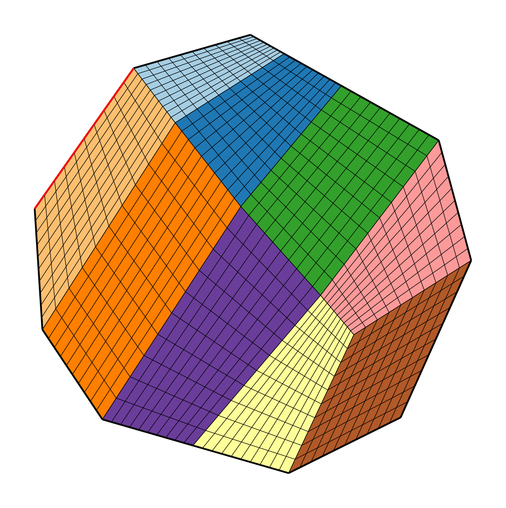
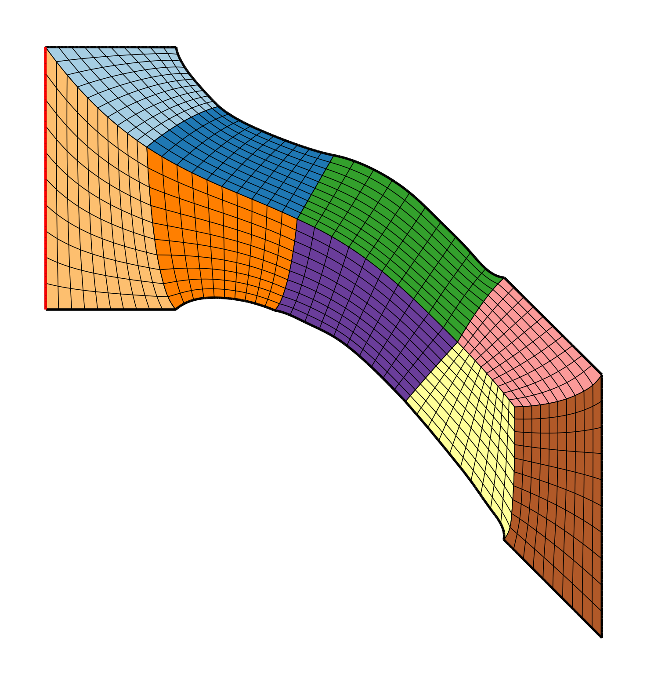
Given only a spline description of a domain boundary, the aim is to construct a bijective map x from a convex polygonal parameter domain into the physical domain Ω. The starting point is the Radó–Kneser–Choquet theorem: a harmonic map from Ω into a convex is a diffeomorphism in the interior. The parameterisation is therefore sought as the inverse of a harmonic map.
Pulling the harmonic problem back to the fixed parameter domain produces a quasilinear elliptic system in nondivergence form. Its coefficients are determined by the metric tensor of the unknown map, so the geometry and the differential operator must be solved together.
Pulling the Laplace problem back to yields the quasilinear elliptic system in nondivergence form used in Eqs. (11)–(13) of Hinz & Buffa (2024). Here H is the Hessian and the coefficients gij are entries of the metric tensor induced by the unknown map.
A multipatch spline space is generally only globally C0, although its functions are smooth inside each patch. The paper therefore evaluates the exact Hessian patch by patch and weakly controls jumps of the map’s gradient across the interior patch interfaces ΓI. This C0-DG scheme is one of three discretisations presented in the paper. The other two are mixed formulations: a Hessian-recovery approach based on ideas of Lakkis and Pryer, and a rotation-free approach inspired by Gallistl. Together with the interior-penalty construction developed from work by Blechschmidt, Herzog and Winkler, these methods are adapted to the nonlinear multipatch parameterisation problem considered here.
This is Eq. (35) of the paper. Repeated component indices are summed. The first term enforces the nondivergence-form PDE within every patch; the second is an interior-penalty term for jumps in the normal gradient across interfaces. The parameter η is chosen sufficiently large.
After discretisation, the parameterisation is the root of a nonlinear residual. A damped Newton method solves this system; a line search controls each update, while a small coefficient shift stabilises intermediate maps that may still be severely folded.
This is the discrete counterpart of Eqs. (25)–(26), with the paper’s operator ℒ replaced by ℒDGη as prescribed for the C0-DG scheme. The prime denotes the Gâteaux derivative with respect to the map and κ is selected by a line search. The coefficient shift Aμ = A + μI stabilises severely folded intermediate iterates.
Once the parameterisation problem has been established, a global control map changes the curvilinear coordinate system in the convex parameter domain. Recomputing the elliptic map in that coordinate system controls grid properties—including cell-size distribution and patch interfaces—while preserving the prescribed physical boundary.
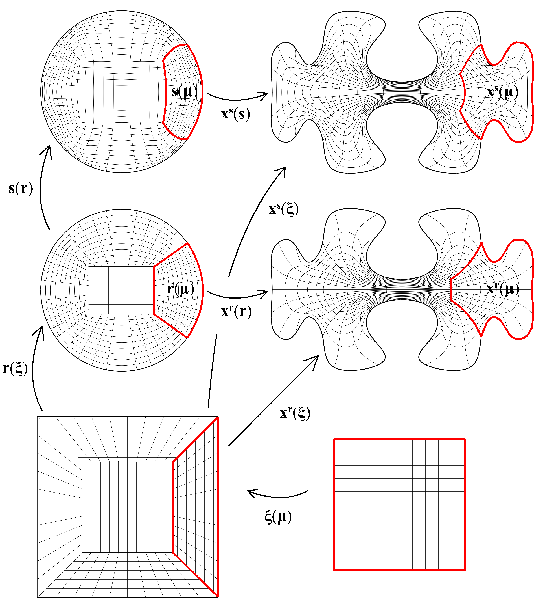
The geometry parameterisation can itself be included in a shape-optimisation problem as an additional PDE constraint. In this cooling-element example, the design variables determine the positions and radii of four active coolers. The objective reduces material and cooling costs while constraining the heat-source temperature. The elliptic grid-generation PDE automatically updates the analysis-suitable interior map whenever the boundary changes. A variable THB-spline basis is adapted during the optimisation loop, allowing local refinement where the evolving geometry or temperature solution requires additional resolution.
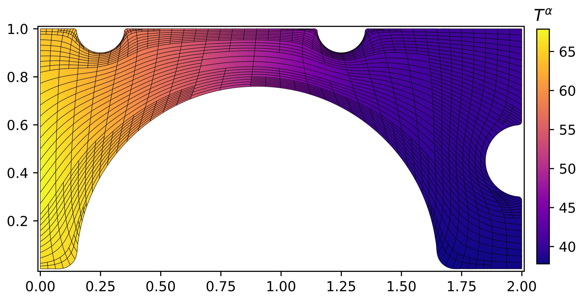
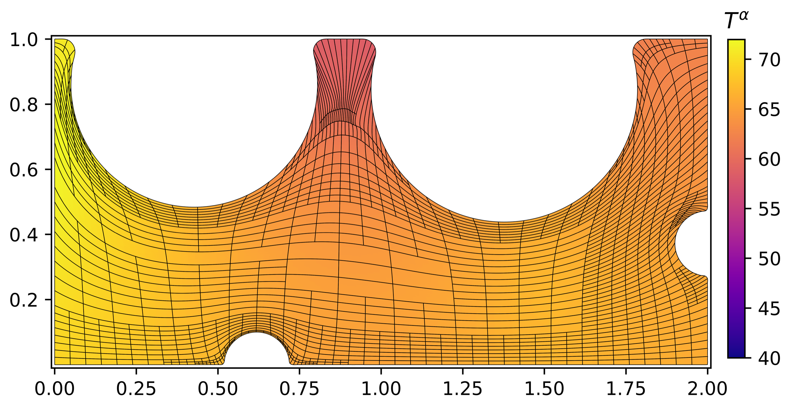
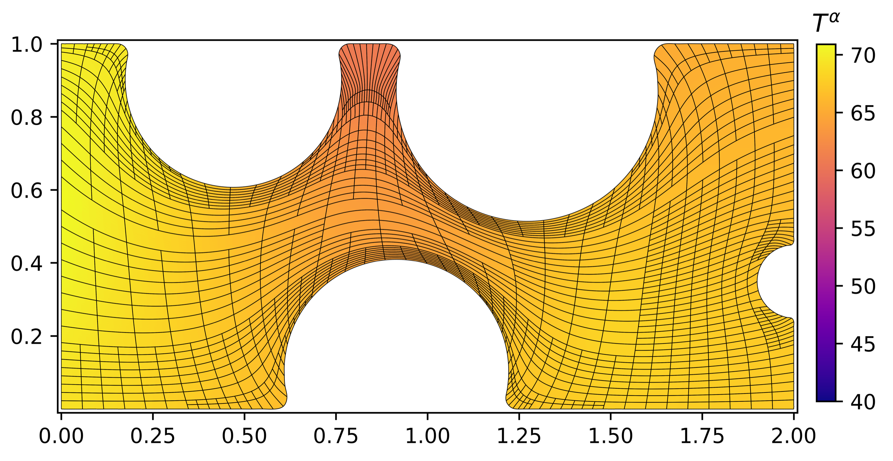
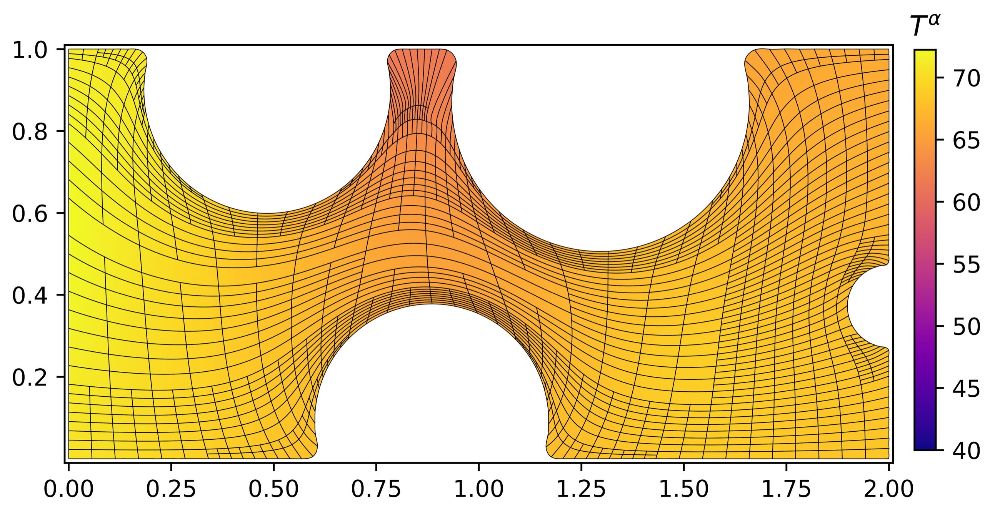
Differentiating the state equation and the elliptic grid-generation equation propagates each design change through both the physical solution and the geometry. The required geometry sensitivity follows from a linear system involving the Jacobian of the grid-generation residual, and the complete objective gradient is then evaluated efficiently with an adjoint formulation.
The design variables α change the geometry map xα, which in turn changes the physical state uα and the objective Jα. Treating the elliptic parameterisation as an additional PDE constraint makes the geometry sensitivity accessible through implicit differentiation. In particular, write the discretised grid-generation PDE as F(xα, α) = 0. Differentiating this identity gives (∂F/∂x)(dxα/dα) = −∂F/∂α. Thus, the geometry sensitivity is obtained by solving a linear system with the Jacobian of the elliptic grid-generation residual. The right-hand side describes how a change in the design variables moves the prescribed boundary. The complete objective gradient can then be evaluated efficiently with an adjoint formulation. The displayed chain rule is Eq. (7) in Hinz et al. (2021).
A tokamak confines plasma in a torus using a strong magnetic field. Simulating the turbulent boundary layer is difficult because the plasma dynamics are strongly anisotropic: structures extend along magnetic field lines, while the vessel wall, divertor and baffles create a complex cross-section. My contribution was the spline-based, boundary-fitted curvilinear grid that lets the GBS plasma code retain its structured finite-difference scheme while representing the realistic wall of the TCV tokamak.
GBS evolves the drift-reduced Braginskii equations, using fourth-order central finite differences in space on staggered three-dimensional grids and explicit Runge–Kutta time integration. Rewriting these equations on a curvilinear grid introduces geometric terms: metric coefficients and Christoffel symbols built from first and second derivatives of the coordinate map. The globally C2-continuous bivariate spline parameterisation made those derivatives directly available at every grid point. The required geometric quantities could therefore be evaluated from the higher-order spline map itself, instead of reconstructing its derivatives with additional finite-difference stencils. This direct connection between the smooth geometry representation and the finite-difference solver was a central advantage of the method.
These were the first GBS turbulence simulations of TCV with a realistic wall including baffles. Neutral particles were included in the simulation, although they are not displayed here. Plasma simulation and visualisation by Louis N. Stenger at the Swiss Plasma Center; spline-based grid generation by Jochen Hinz.
The same parameterisation machinery in other settings. The method takes a boundary description and produces an interior parameterisation suitable for analysis. The examples below are domains it has been applied to.
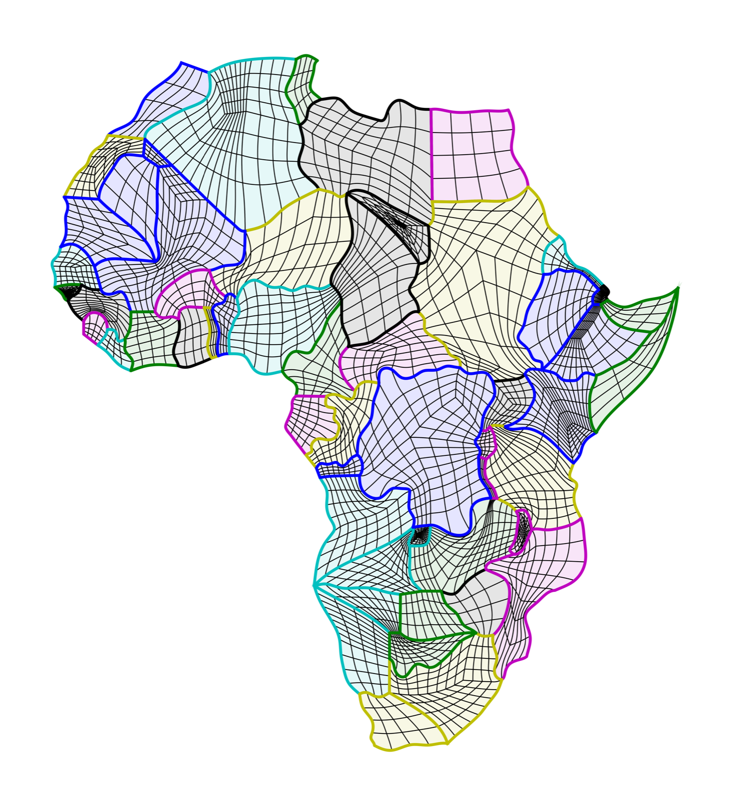
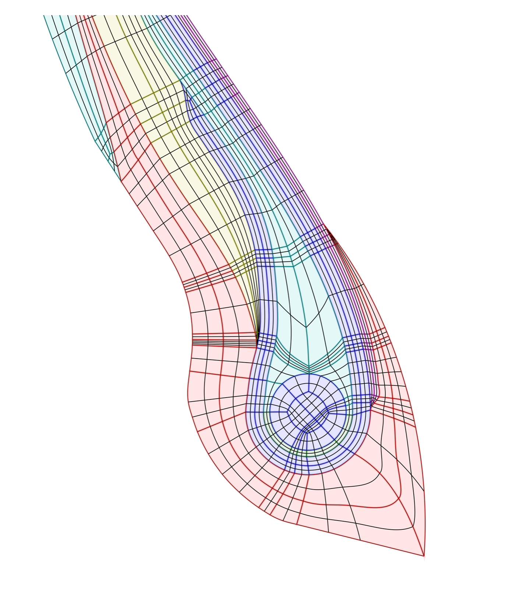
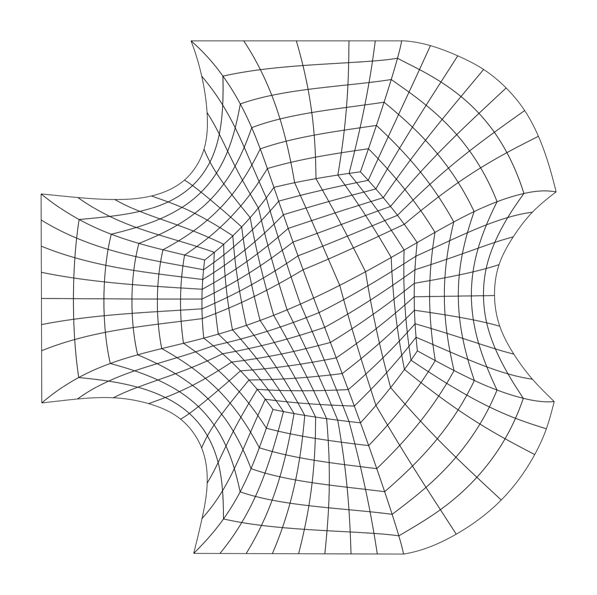
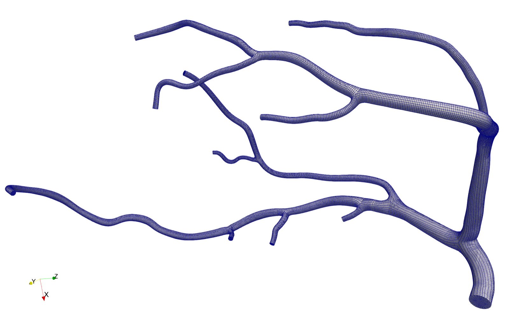